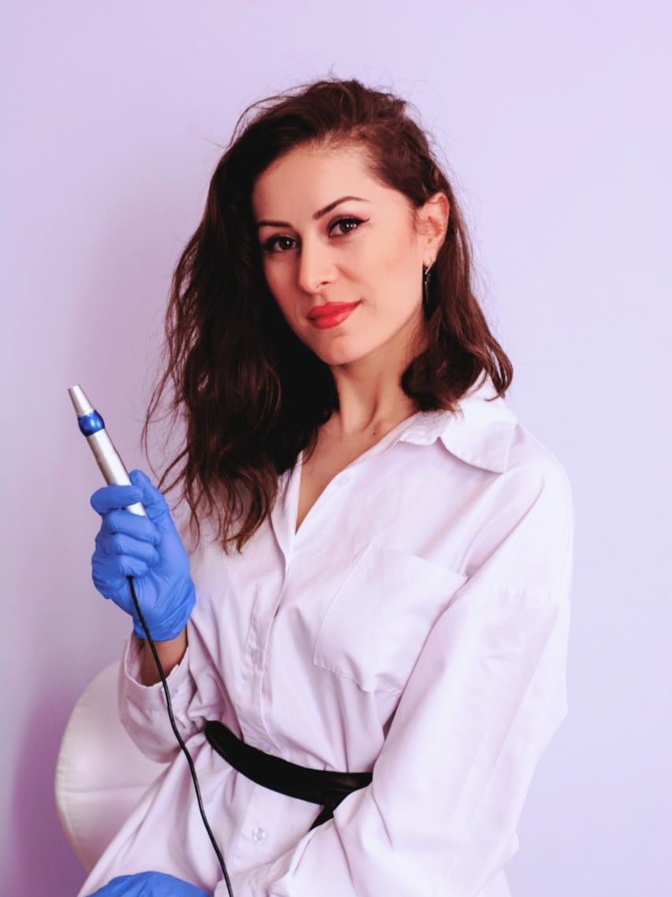
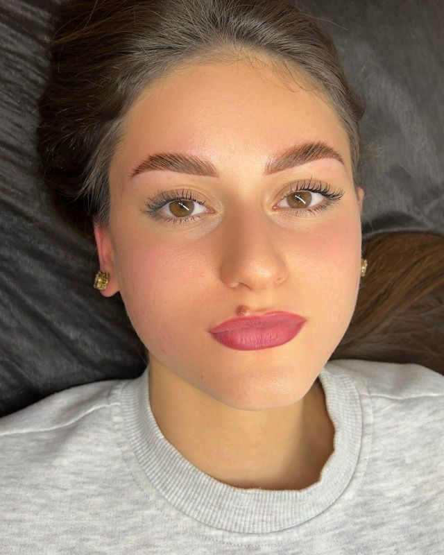
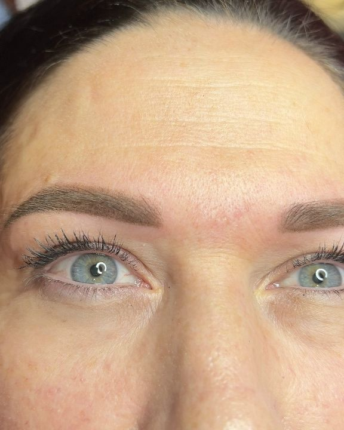
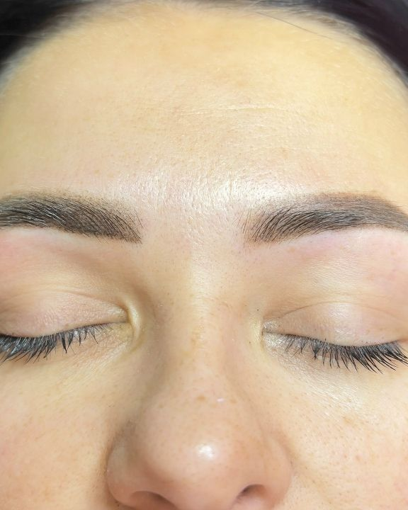
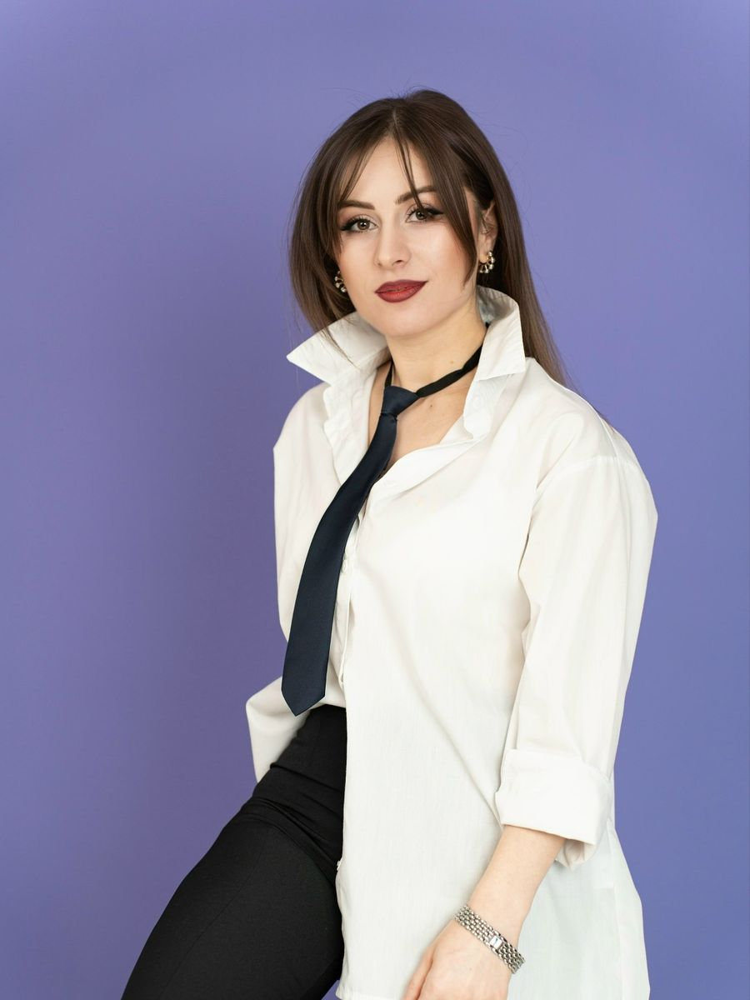
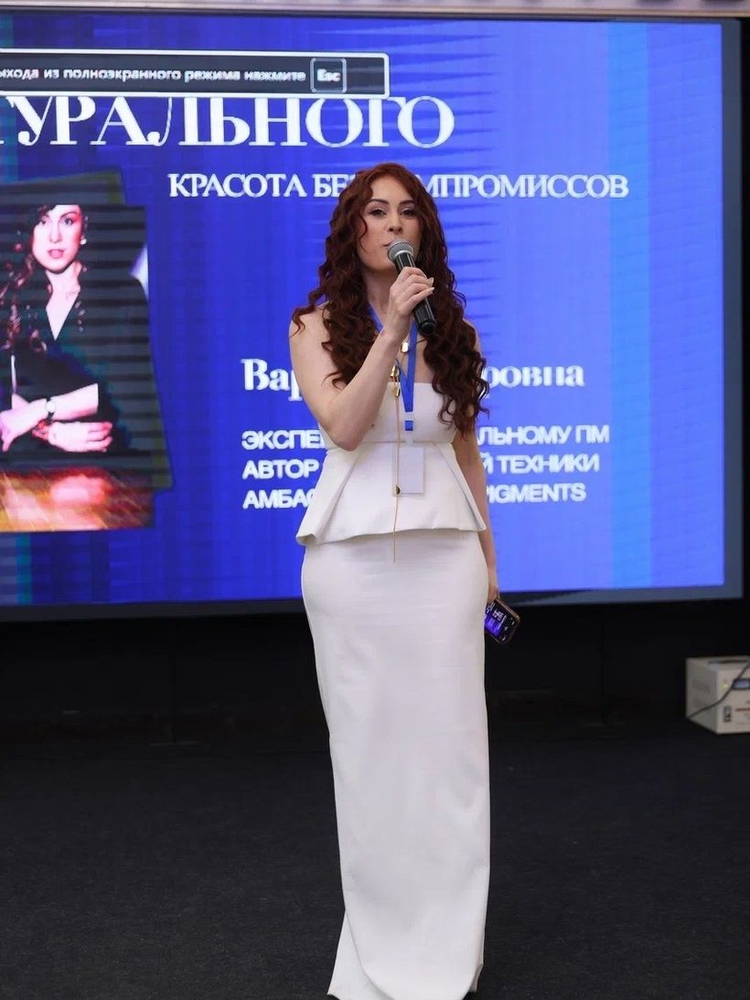
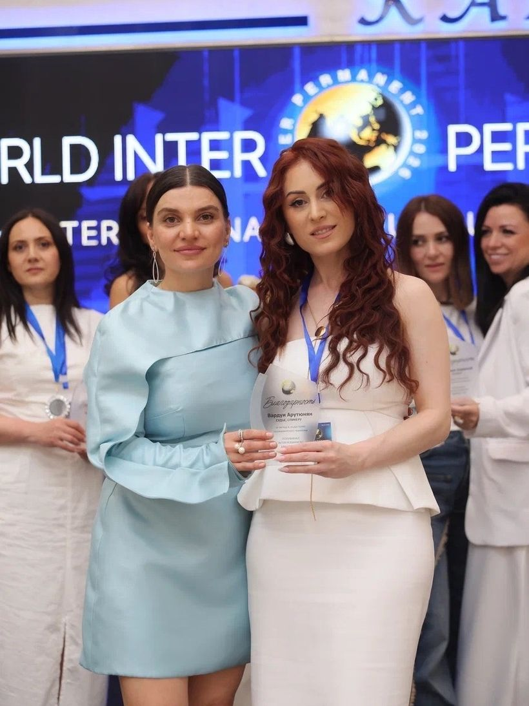
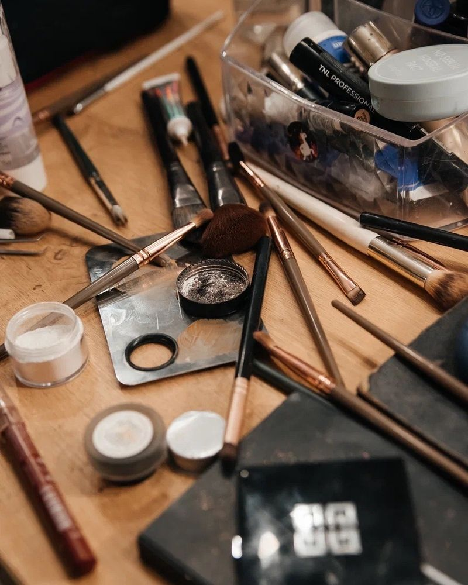

Красота, которая выглядит естественно
Вера-Перманент — мастер, тренер-эксперт и судья по перманентному макияжу. Брови, губы и стрелки, которые подчёркивают вас, а не бросаются в глаза. Создаю красоту с любовью и учитываю индивидуальность каждого клиента.

Точность, деликатность и естественный результат
Каждая работа начинается с консультации: форма и оттенок подбираются под вашу внешность, тон кожи и желаемый образ.
 01→
01→Брови
Естественная форма, которая подчёркивает взгляд.

02→Губы
Ухоженный контур и живой оттенок.

03→Стрелки
Выразительный взгляд без ежедневного макияжа.

04→Обновление
Мягко высветляем старый пигмент и создаём новую форму.
А ещё — макияж и причёски, обучение мастеров. Все услуги

Мастер, которому доверяют годами
Я Варда. Топ-мастер, тренер-эксперт, судья-спикер по перманентному макияжу и стилист-визажист. Для меня результат — это доверие и бережный подход: шаг за шагом, без спешки, с вниманием к каждой детали.
- Grand-эксперт по перманентному макияжу бренда Draiff
- Судья чемпионатов и спикер международных саммитов
- Номинант премии IP Awards в категории Top-master PMU
- Тренер-эксперт: обучаю коллег перманентному макияжу
Практика, которая говорит сама за себя
Реальные работы, без фильтров
Фотографии из архива мастера: брови, губы, макияж и образы.
Четыре шага к естественному результату
Бережный подход: без спешки, с вниманием к вашему тону кожи, форме лица и образу.
Консультация
Обсуждаем ваш образ и ожидания и выбираем форму: от графичной до максимально естественной.
Цвет и подтон
Определяем цветотип и подтон кожи, чтобы пигмент после заживления остался чистым и благородным.
Процедура
Работаем бережно, шаг за шагом, без спешки — с вниманием к каждой детали.
Коррекция
Оцениваем результат после заживления и при необходимости обновляем его отдельной процедурой.
Учу перманентному макияжу и делюсь опытом
Тренер-эксперт Draiff, судья и спикер: выступаю на международных саммитах и оцениваю работы коллег на чемпионатах. Курс «Визажист с нуля» и обучение перманентному макияжу для тех, кто хочет расти в профессии.
- Разбор цветотипа и подбора пигмента
- Курс «Визажист с нуля»
- Формат и программа обсуждаются индивидуально



Какой у вас подтон кожи?
Подтон влияет на выбор пигмента: слишком холодный оттенок на холодной коже может дать серо-синий результат. Три вопроса — и вы узнаете, на что обратить внимание.
Полезно знать до процедуры
Запись открыта — напишите или позвоните
Обсудим форму, подберём оттенок под ваш тон кожи и подскажем, подойдёт ли процедура именно вам. Ближайшие свободные места мастер публикует на странице ВКонтакте.
Почему перманентный макияж может дать серо-синий оттенок
Многие замечают: у большинства девушек кожа имеет холодный подтон. Этот нюанс обязательно нужно учитывать при выборе оттенков для перманентного макияжа — иначе результат может разочаровать.
Что такое холодный подтон
Это когда в оттенке кожи преобладают розовые, голубые или синеватые нотки — в отличие от тёплых персиковых или золотистых.
Откуда берётся серо-синий цвет
Если мастер выбирает слишком холодные, синеватые пигменты и не учитывает особенности кожи, после заживления может проявиться нежелательный эффект:
- пигмент взаимодействует с холодным подтоном кожи;
- со временем он слегка «проседает» и становится виден сквозь верхний слой;
- вместо благородного оттенка получается серо-синий или пепельный тон.
Что с этим делать
Подбирать пигмент индивидуально: с учётом цветотипа и подтона кожи, цвета волос и глаз. Поэтому каждая работа начинается с консультации.

Ухоженные губы — ваш секретный козырь
Вы замечали, как сразу меняется образ, когда губы выглядят аккуратно, чётко и ярко? Ухоженные губы — это не просто деталь макияжа, а залог уверенности.
- подчёркивают естественную красоту;
- делают улыбку более притягательной;
- добавляют образу завершённость;
- помогают выглядеть свежо даже без полного макияжа.
Как подобрать оттенок
Мы находим «тот самый» цвет, учитывая особенности внешности: тон кожи, оттенок слизистой, цвет волос и глаз. А ещё важно, какой образ хочется создать — нежный и естественный или яркий и выразительный.

От глубокого татуажа — к нежной натуральности
Иногда путь к красивым бровям начинается с исправления прошлого. Всего пара сеансов — и мы мягко высветлили старый пигмент, чтобы открыть пространство для новой эстетики.
Дальше создали идеальную форму и подобрали деликатную технику: теперь брови выглядят так, будто их слегка подчеркнула сама природа.
Про что эта история
Такой результат — про доверие и бережный подход: шаг за шагом, без спешки, с вниманием к каждой детали.
А вам какая форма бровей ближе — более графичная или максимально естественная?

Мы вместе уже 4 года
Часто вы видите эту клиентку у меня на ленте — и это само по себе говорит о доверии. Мы вместе уже четыре года, и за это время было столько историй, столько перемен…
А сегодня решили сделать шаг вперёд: перманент бровей и обновление губ. Это не просто про новый образ — это про уверенность, про то, как здорово, когда рядом тот, кому доверяешь.